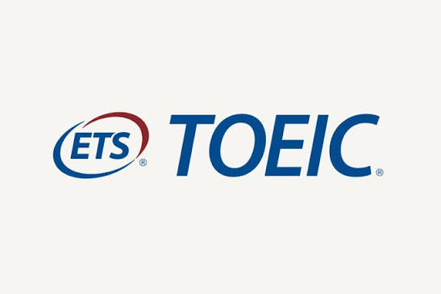
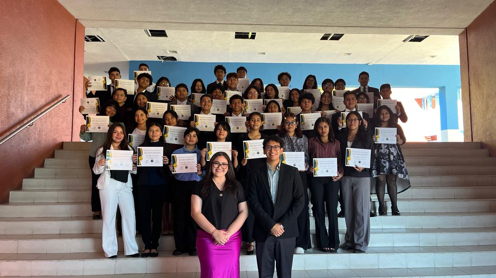
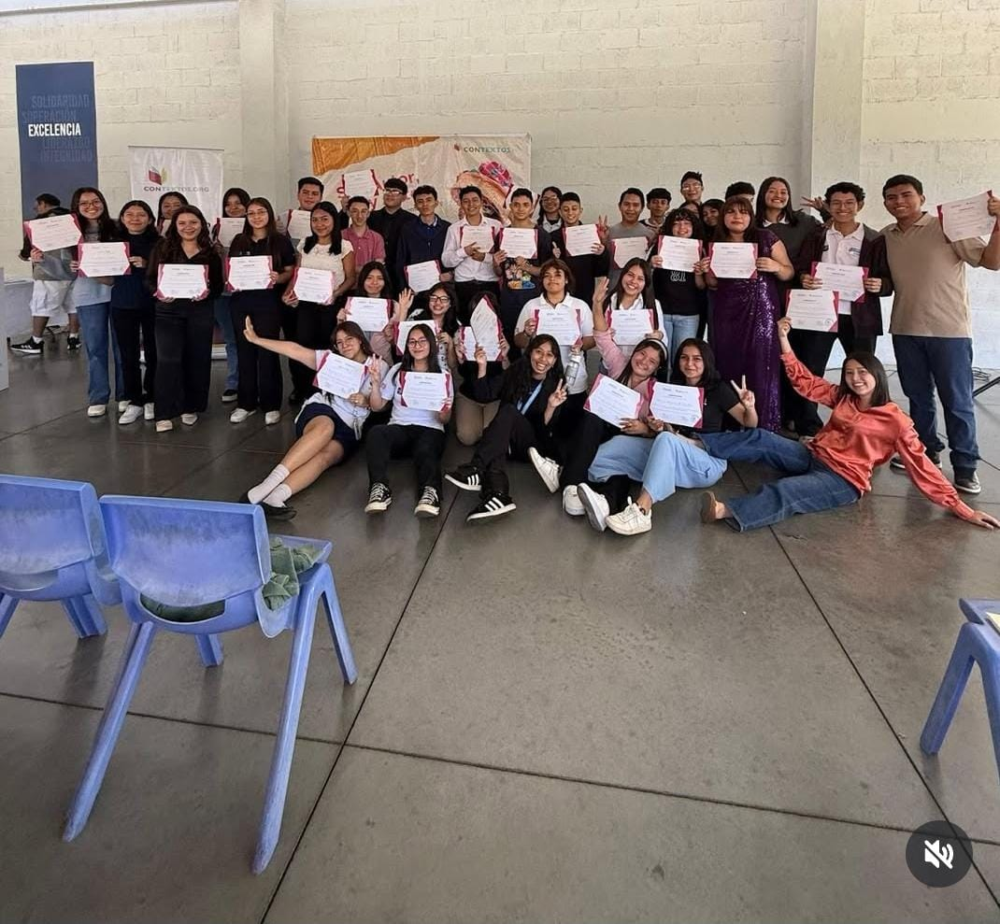
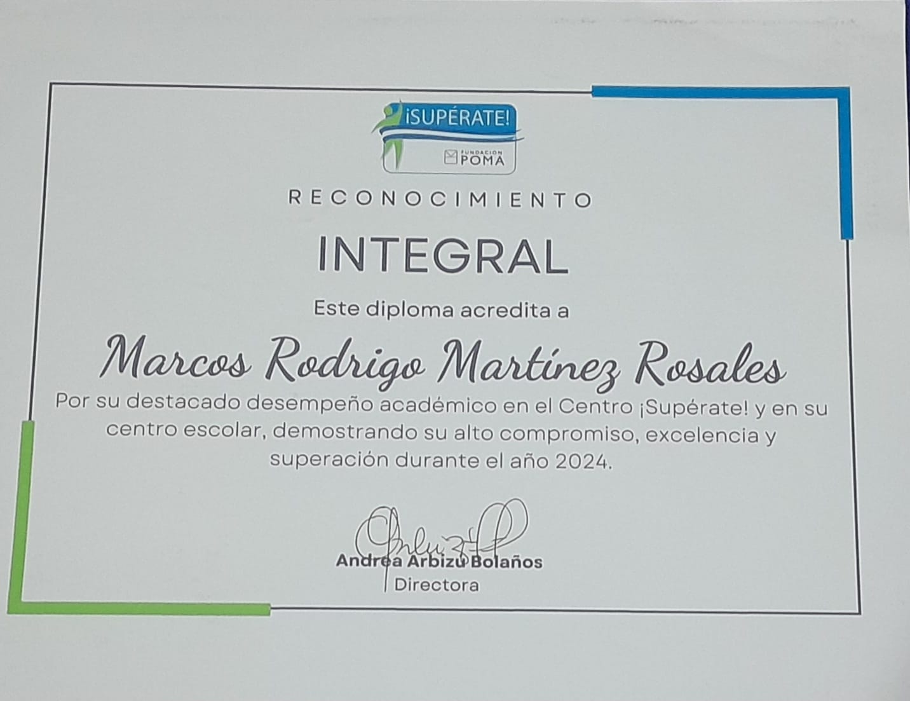

01
TOEIC Test
Certificación internacional que evalúa mis habilidades de comunicación en el idioma inglés, permitiéndome demostrar mi nivel de comprensión y uso del idioma.

Reconocimientos que respaldan los conocimientos y habilidades que he desarrollado durante mi formación.
Certificación internacional que evalúa mis habilidades de comunicación en el idioma inglés, permitiéndome demostrar mi nivel de comprensión y uso del idioma.

Certificación Microsoft Office Specialist que acredita conocimientos en el manejo de Excel, incluyendo herramientas para organizar, analizar y administrar información.

Certificación de nivel avanzado que demuestra conocimientos especializados en las funciones y herramientas de Microsoft Excel para el análisis y gestión de datos.

Experiencias que han complementado mi formación académica y contribuido a mi desarrollo personal.
Fue el primer certificado que hice en Supérate, me encantó este curso, ya demostré habilidades como la conexión de ideas e interpretar la información técnica que se me presentí en su momento. Tal vez no como un desafío, mas bien como un proyecto que presentamos al momento de la graduación.

Una de las mejores actividades extracurriculares que he realizado, ya que conocía a varias personas y el conocimiento que se me impartió, puedo decir que ha forjado en mi una persona mas comunicadora y segura, el reto mas difícil fue perder ese miedo y conectar bien mis ideas al hablar.

Una de las actividades extracurriculares ,más exigentes, ya puso en prueba todo lo que aprendí en el anterior curso, pero no dejo de ser una de las mejores experiencias, ya que pude forjar aun mas mis habilidades de comunicación.
Un curso en el cual recreamos una historia de nuestra vida en un libro que nosotros mismos armamos, una acividad muy bonta.

Una recopilación de los reconocimientos obtenidos durante diferentes etapas de mi formación.

Diciembre 2024